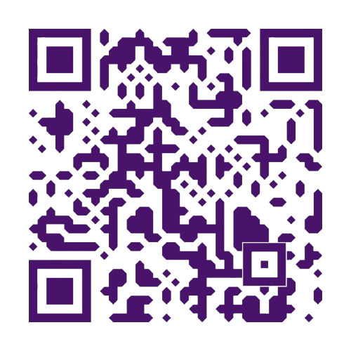

Clique nos pequenos ícones ao lado do texto para ser enviado para a minha rede social/portfólio.
Recomendo me seguir em todas, mas especificamente no meu canal do WhatsApp 🌙✨
Meu portfólio com projetos, ilustrações e comissões. Lá tudo fica mais organizado para explorar meus trabalhos de forma mais específica 🍄
Uma das principais redes para acompanhar meus desenhos, reels animados, artesanato, bijuterias e conteúdos artísticos ✨
Rede onde estou mais ativa interagindo, comentando assuntos favoritos e postando desenhos exclusivos 🌙
Vídeos longos sobre arte, rotina, hobbies e futuramente gameplays inspiradas nos meus youtubers favoritos 🎮
O melhor lugar para acompanhar todas as novidades das minhas redes ao mesmo tempo 🌙
No QRCode abaixo você pode acessar meu Strawpage, um site totalmente feito por mim com dinâmicas interativas e conteúdos especiais :>
